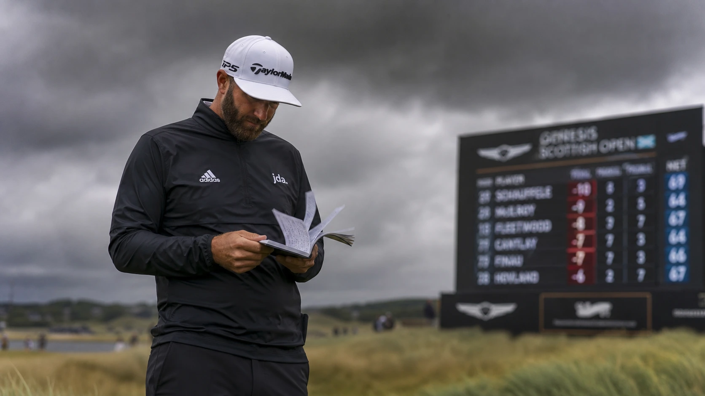

Quick Summary: Scottie Scheffler sits at a skinny +500 to +600, begging the question: do you pay the premium, or hunt for value where the wind turns favorites into also-rans by Friday afternoon? We're digging. Rory McIlroy (+1000) leads our outright board, Matt Fitzpatrick (~+1800) is the high-floor each-way play, and Si Woo Kim (+4000) is the market's forgotten value. Meanwhile, we are fading Jon Rahm (+1200) and Xander Schauffele (~+2000).
Responsible Gaming Disclaimer: This betting guide represents the analytical opinions of the Golf Raw editorial team and is for informational/entertainment purposes only. Sports betting contains inherent risk. Odds are volatile and subject to change. Never wager money you cannot afford to lose. If you or someone you know has a gambling problem, help is available. Please bet responsibly.

Links Golf Variance and Course History at The Renaissance Club
Links golf is the ultimate test of adaptation, and betting on it requires a complete recalibration of how we value statistical models. The Renaissance Club in North Berwick, designed by Tom Doak, is a links-adjacent layout. Generous fairways invite power, but large, heavily contoured greens and severe run-offs punish any approach shots that aren't flighted with absolute control. When the coastal wind picks up off the Firth of Forth, player execution becomes highly volatile.
Unlike standard American parkland courses, a links-adjacent layout introduces weather draw bias that can decimate a betting card before Friday afternoon. If the wind splits the field, a golfer caught in the wrong wave faces an uphill battle. Therefore, course history and links-specific competence are far more reliable metrics than raw recent form. We prioritize course history and tactical flight control over pure athletic dominance this week.
The Favorite: Why Scottie Scheffler at +500 is a Bad Market Value
Let's address the elephant in the field. Scottie Scheffler is the undisputed world No. 1 and is priced as the heavy favorite everywhere, sitting between +445 and +600. In a 156-man field, this price pays you almost nothing and demands that Scheffler play flawless golf. He has nine top-10s in 14 starts this season, and is highly motivated after four runner-up finishes—including a short putter miss at the Travelers Championship that handed Viktor Hovland the trophy.
However, betting Scheffler at +500 this week represents poor market value for two clear reasons. First, this is only his second competitive appearance at The Renaissance Club. His debut in 2022 was thoroughly underwhelming: a T55 finish with only a single round carded under 70. Second, the heavy variance of coastal links golf makes backing a single player at such short odds mathematically irresponsible. Admire his skill, but keep him off your outright betting slip at this number.
The Outrights: Best Bets to Win the Genesis Scottish Open
We are searching for established course comfort and value down the board. Here are the outright selections that present the strongest statistical arguments this week.
Rory McIlroy (+1000)
If you strip out the overpriced favorite, Rory McIlroy has the strongest claim to the trophy. His record at The Renaissance Club is stellar: twelve competitive rounds with not a single score over 68. He won this tournament in 2023, finished runner-up last year, and has compiled three top-fours in four visits. Raised on Irish links, McIlroy outdrives the field and flights his long irons beautifully. The only concern is his light schedule heading into the Open, but this is the exact event he uses to shed any competitive rust. Take the 10-to-1 odds.
Matt Fitzpatrick (~+1800)
Fitzpatrick is the high-floor selection for those seeking an each-way safety net. He and Chris Gotterup are the only players with three PGA Tour victories in 2026, and Fitzpatrick has already shown he can take down Scheffler in a playoff this season. His Renaissance Club history is impeccable, reading T2, T4, and T6. While he lacks the raw driving distance of the field's longest bombers, his fairway accuracy and elite iron flighting are tailor-made for this layout. Back him outright or look for a top-5 finishing market.
Si Woo Kim (+4000)
This is the value play the market completely forgot. Statistical models reveal the widest gap between Si Woo Kim's true form and his market price. His approach play is elite, and his driving is consistently straight—precisely what Doak's layout demands. At 40-to-1, he represents a phenomenal each-way target that anchors a betting card if the wind favors his tee-time wave.
The Sleeper & DFS Plays: Finding Links Value
For DFS lineups and finishing position markets, we target course-fit specialists and links-lovers who have been ignored by the sportsbooks.
- Nicolai Hojgaard (~+4000): A prime candidate for the first-round leader (FRL) market. Three of his four starts here have opened with a 68 or better. He ranks fourth on tour in driving distance, a metric that heavily influenced the top of last year's leaderboard.
- Tyrrell Hatton (~+3000): Hatton thrives in links environments. He has never finished outside the top 25 at The Renaissance Club, won on LIV Golf in his last start, and placed T7 at the U.S. Open. A very strong top-5 or top-10 bet.
- Eugenio Chacarra (~+10000): Chacarra is in excellent form with back-to-back DP World Tour victories, climbing rapidly in the Race to Dubai. At triple-digit odds, his aggressive playstyle provides major fantasy upside.
- Adam Scott (~+6500 to +8000): Scott passes all course-fit metrics and sits comfortably in our model's top-10. The market is pricing him like a retiree, presenting a strong top-20 finishing value.
- Brooks Koepka (~+6500 to +8000): Similar to Scott, Koepka's links pedigree is ignored by the current odds. He is a low-cost, high-floor option for DFS lineups.
"Course history and links-specific flight control are the only metrics that matter when the Firth of Forth starts blowing. Chasing raw parkland form is a ticket to a missed cut."
The Names to Fade: Overpriced Contenders
Fading players isn't personal; it's a strict assessment of price versus probability. We are leaving these two big names completely off our slips.
Jon Rahm (+1200)
Leaving Rahm off the card is uncomfortable, but the data demands it. His sole previous appearance at The Renaissance Club was a disaster, finishing 5 over par and missing the top 50 in 2022. Furthermore, his 2026 season has been highly erratic: a strong T2 at the PGA Championship contrasted with a missed cut at the U.S. Open and a disappointing T38 at the Masters. The +1200 price tag assumes a level of comfort and form that Rahm simply hasn't demonstrated here.
Xander Schauffele (~+2000)
We are not fading Schauffele's talent—he won this event in 2022—but rather his current swing. He limped out of the Travelers Championship with a T51 finish and has looked out of sync. At +2000, the books are charging you for his past trophy rather than his current form. Let someone else pay that premium.
Tactical Execution: How to Bet the Scottish Open
To walk away profitable from a links-adjacent event, follow two rules: spread your exposure and watch the wind forecast. The tee-time draw can create massive disparities in scoring conditions. If the weather splits, pivot your cards to favor the calmer wave.
Additionally, focus heavily on finishing position markets. A top-10 wager on McIlroy or a top-5 bet on Hatton offers far more stability than placing outright bets on a field of 156. Do not treat this like a standard American parkland birdie-fest. Flight control, short-game patience, and wind management are what cash tickets in Scotland.
The Raw Card
Here is our finalized card for the 2026 Genesis Scottish Open:
- Outright Winner: Rory McIlroy (+1000)
- Each-Way Value: Matt Fitzpatrick (+1800) & Si Woo Kim (+4000)
- DFS/Finishing Markets: Tyrrell Hatton (Top 10), Nicolai Hojgaard (First Round Leader / Top 20)
- Fades: Scottie Scheffler (Outright only; fine as top-5), Jon Rahm, Xander Schauffele
Frequently Asked Questions
Who is favourite to win the 2026 Scottish Open?
Scottie Scheffler is the betting favorite, priced around +445 to +600, with Rory McIlroy next near +1000.
What is the best value outright bet?
McIlroy at +1000 has the strongest case on course record, while Si Woo Kim near +4000 is the standout sleeper on his underlying numbers.
Who should you fade this week?
Jon Rahm, whose Renaissance Club record is poor despite a short price, and Xander Schauffele, whose recent form doesn't justify +2000.
What kind of course is the Renaissance Club for betting?
A links-adjacent test rewarding driving, iron play and patience in wind. Backing distance alone is a trap, and the tee-time draw can swing results heavily.
Any longshots worth a look?
Eugenio Chacarra at triple-digit odds and Nicolai Hojgaard for first-round leader, plus Adam Scott and Brooks Koepka in the finishing markets.
When is the 2026 Scottish Open?
July 9 to 12 at the Renaissance Club in North Berwick, co-sanctioned by the PGA Tour and DP World Tour, $9 million purse.